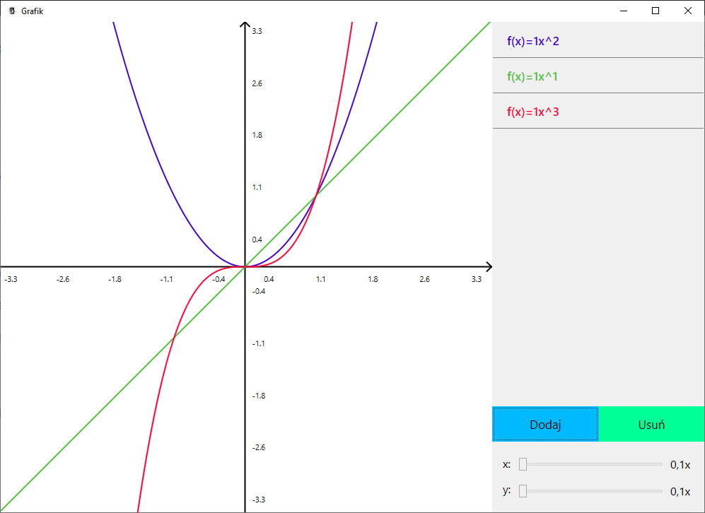
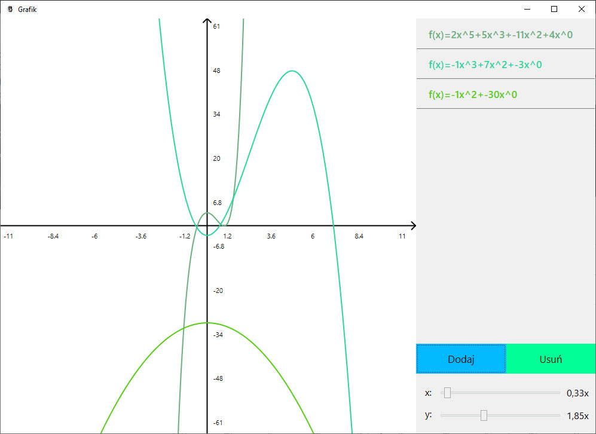
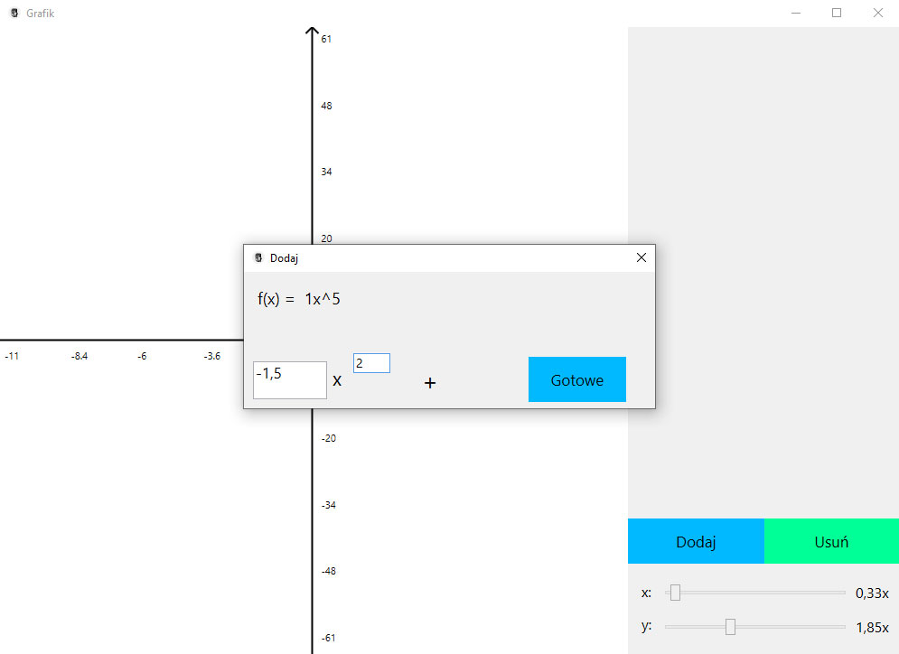

Grafik
Stworzony przez pasjonata matematyki dla tych, którzy czerpią przyjemność z odkrywania jej piękna, ale również tych, którzy potrzebują wskazówki podczas pracy


Potrafi więcej, niż myślisz
Grafik to prosty program, który pozwala narysować na ekranie komputera nawet najbardziej skomplikowane wykresy funkcji wielomianowych
Open source
Program został udostępniony na licencji GNU GPL v3, aby każdy mógł z niego korzystać, a także pomóc w rozwoju projektu
